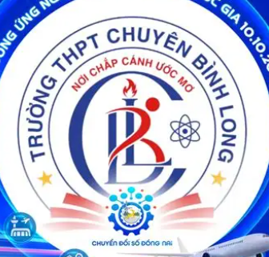
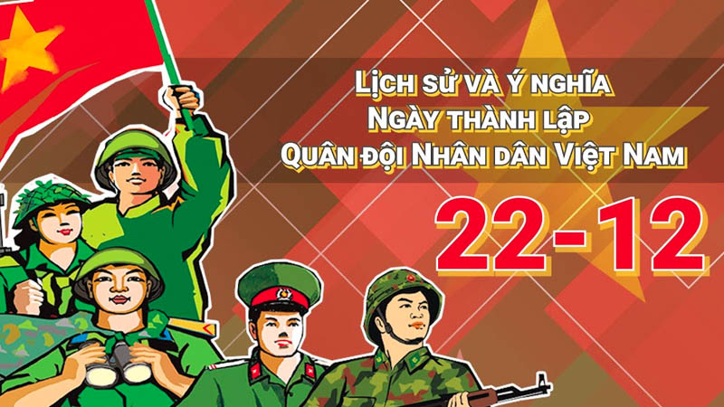
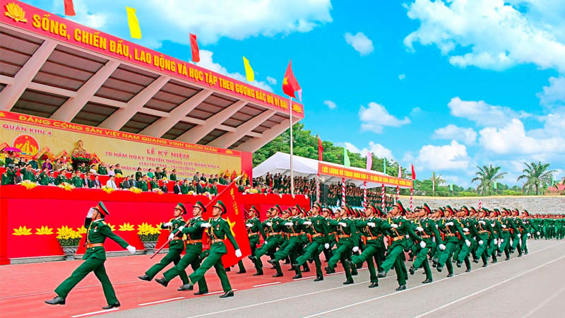
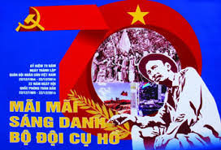
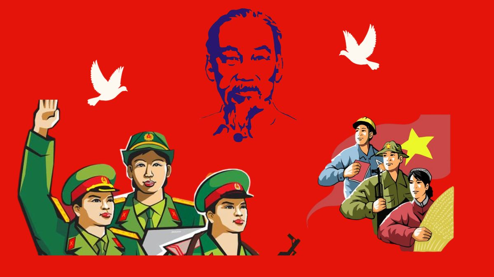

Hoạt động tưởng nhớ
Nhiều hoạt động được tổ chức như thăm nghĩa trang liệt sĩ, gặp mặt cựu chiến binh, và các buổi lễ tri ân truyền thống.


Tự hào – Kỷ luật – Sức mạnh
Ngày 22 tháng 12 hằng năm là Ngày Quân đội Nhân dân Việt Nam, một mốc son quan trọng ghi nhớ sự ra đời và trưởng thành của lực lượng vũ trang nhân dân. Được thành lập năm 1944, Quân đội Nhân dân Việt Nam đã trải qua nhiều chặng đường chiến đấu kiên cường, góp phần làm nên những thắng lợi vĩ đại của dân tộc. Không chỉ giữ vai trò bảo vệ Tổ quốc, quân đội còn đồng hành với nhân dân trong lao động sản xuất, cứu hộ cứu nạn và xây dựng đất nước. Ngày 22/12 là dịp để tôn vinh tinh thần anh dũng, ý chí kiên cường và sự hy sinh thầm lặng của các thế hệ cán bộ, chiến sĩ, đồng thời khơi dậy lòng biết ơn và niềm tự hào dân tộc.

Tháng 12 năm 1944, Chủ tịch Hồ Chí Minh đã ra chỉ thị thành lập “Đội Việt Nam Tuyên truyền Giải phóng quân” với 34 quân. Đây là đội tuyên truyền, đồng thời là khởi điểm của giải phóng quân, có thể đi suốt từ Nam ra Bắc.Tại khu rừng huyện Nguyên Bình tỉnh Cao Bằng vào ngày 22/12/1944 Đội Việt Nam Tuyên truyền Giải phóng quân đã làm lễ thành lập có 3 tiểu đội với 34 chiến sĩ do Võ Nguyên Giáp chỉ huy. Đồng chí Hoàng Sâm làm đội trưởng, Xích Thắng (Dương Mạc Thạch) làm chính trị viên, Hoàng Văn Thái phụ trách Kế hoạch-Tình báo, Vân Tiên (Lộc Văn Lùng) quản lý.34 chiến sĩ với 34 khẩu súng họ là những người dũng cảm, kiên quyết trong các đội du kích Cao-Bắc-Lạng, Cứu quốc quân,... họ có lòng yêu nước và căm thù giặc rất cao vì thế đã siết chặt họ thành 1 khối vững chắc, không kẻ thù nào phá vỡ được.17 giờ chiều 25-12-1944 và 7 giờ sáng ngày 26-12-1944 Đội Việt Nam Tuyên truyền Giải phóng quân đã đột nhập đồn Nà Ngần, tiêu diệt 2 đồn địch, giết chết 2 tên đồn trưởng, bắt sống toàn bộ binh lính, thu toàn bộ vũ khí, quân trang, quân dụng.Từ lúc thành lập Đội Việt Nam Tuyên truyền Giải phóng quân lập nhiều chiến công, luôn phát triển và trưởng thành. Từ đó ngày 22/12/1944 được xác định là ngày thành lập Quân đội nhân dân Việt Nam.

Sau năm 1975: Quân đội tiếp tục thực hiện nhiệm vụ bảo vệ chủ quyền lãnh thổ, biên giới, đồng thời tham gia vào sự nghiệp xây dựng và công nghiệp hóa đất nước.Giai đoạn hiện tại: Quân đội được xây dựng theo hướng cách mạng, chính quy, tinh nhuệ, từng bước hiện đại; tham gia bảo vệ hòa bình và phát triển trong khu vực và trên thế giới.Ngày hội Quốc phòng toàn dân: Từ năm 1989, ngày 22/12 hàng năm còn là Ngày hội Quốc phòng toàn dân, với nhiều hoạt động ý nghĩa để tôn vinh và phát huy truyền thống yêu nước, bảo vệ Tổ quốc.

Ngày 22/12 là một trong những ngày lễ, kỷ niệm trong tháng 12. Ngày thành lập Quân đội Nhân dân Việt Nam nhằm động viên cán bộ, chiến sĩ ra sức rèn luyện và không ngừng nâng cao cảnh giác, không ngại gian khổ, vượt qua mọi khó khăn để hoàn thành mọi nhiệm vụ.Tuyên truyền sâu rộng truyền thống đánh giặc giữ nước của dân tộc và phẩm chất Bộ đội Cụ Hộ, động viên mọi công dân chăm lo củng cố quốc phòng, xây dựng quân đội, bảo vệ Tổ quốc.

Nhiều hoạt động được tổ chức như thăm nghĩa trang liệt sĩ, gặp mặt cựu chiến binh, và các buổi lễ tri ân truyền thống.